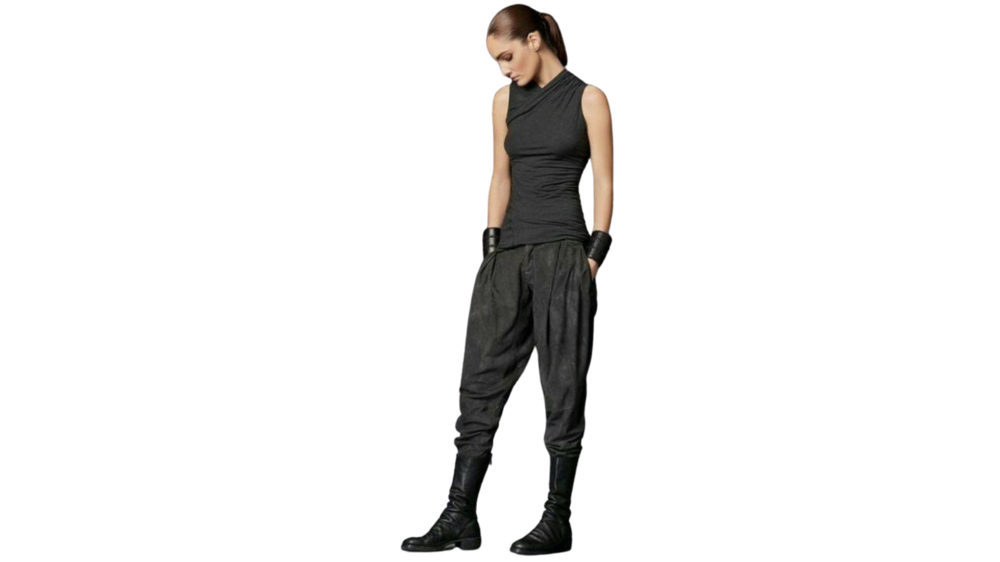
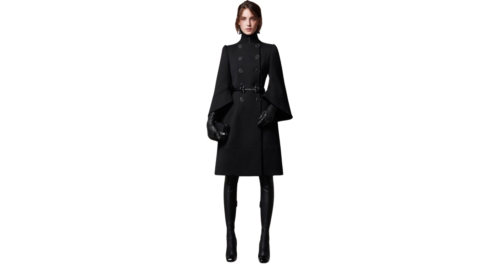

Astralys es una marca boliviana que nació de la pasión por la moda gótica y futurista. Creamos prendas únicas que reflejan identidad, creatividad y estilo alternativo. Nuestra misión es empoderar a las personas a través del diseño con actitud. Astralys es una marca de ropa urbana que se distingue por su estilo único, donde la estética gótica se fusiona con elementos futuristas para crear prendas originales y vanguardistas. El propósito de Astralys es brindar a sus clientes una forma de expresión auténtica a través de la moda, ofreciendo diseños que desafían las tendencias convencionales y reflejan una identidad individual y fuerte. La propuesta de valor de Astralys se basa en la combinación de calidad, innovación y un estilo alternativo que no solo resalta la personalidad de quienes la visten, sino que también garantiza comodidad y funcionalidad para el día a día. Cada colección está pensada para personas que buscan destacar y conectar con una cultura urbana y contemporánea, donde la ropa es una extensión de su mundo interior y su visión del futuro. Astralys no solo vende prendas, sino que crea una experiencia estética y cultural que invita a sus seguidores a formar parte de una comunidad que valora la originalidad, el arte y la autoexpresión a través del estilo.
 